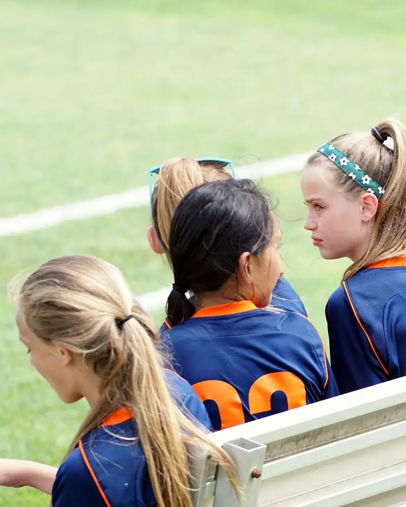
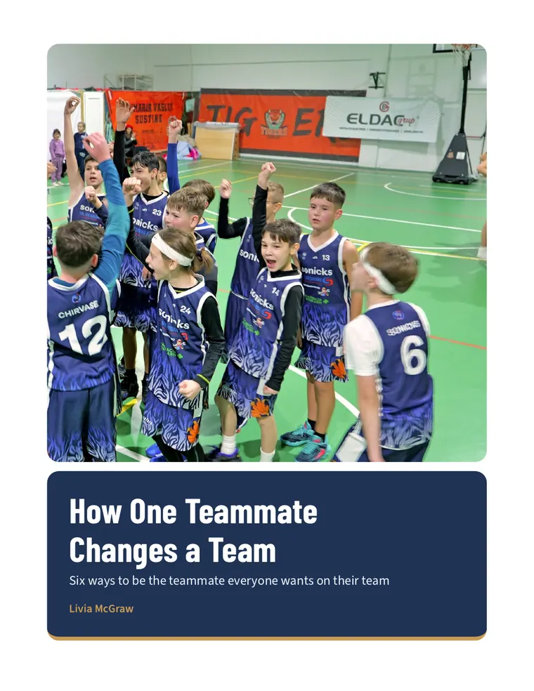

Every player can lead
A free handout of six teammate habits from real research, made for young athletes.

Being a good teammate is harder than it looks
Young players hear “be a good teammate” all the time, and few are ever shown what it takes.
23 sec
Doubt spreads through a team
In an experiment with 144 young soccer players, teams whose leader sounded confident finished a passing drill almost 23 seconds faster. Teams whose leader voiced doubt barely improved.
faster with a confident teammate leading
72
Players stop believing in themselves
Players and coaches ranked 72 things that raise or lower a team's confidence. Among the worst were negative talk, slumped body language and anger at a teammate's mistake.
sources of team confidence, ranked by players and coaches
44%
No player should have to wait for the captain to lead
When researchers asked 4,451 players and coaches who led their teams, 44% said the captain was not the top leader in any of four leadership roles. Leaders came from all over the roster.
said the captain was not the top leader in any role
What 14 studies taught me about teammates
I'm Livia McGraw, and I play tennis. I've had bad teammates, and I know how much one person's attitude can change the way a whole team plays.
So I went looking for what the research says. I read 14 peer-reviewed studies on how teammates affect each other's confidence and performance. My favorite followed high school teams, because I could relate to it. The biggest thing I took away is that a teammate's encouragement can matter as much as the coach's, because players listen to people who are more like them.
I turned what I learned into six habits a third grader can use, and Coach Young invited me to share them with his teams at the basketball academy. Before this, I coached Pee Wee basketball for two years.

Three steps to becoming the teammate everyone wants
It starts at your next practice.
-
Pick one habit
Read the six habits in the free handout and choose the one your team needs first.
-
Fill out a goal card
Write down one thing you'll do at practice this week, and keep the card in your bag.
-
Watch your team believe
Enjoy playing on a team that trusts each other and plays better because of it.
Six habits from the research
Each one in the handout shows what scientists found and what it looks like at practice, in a game and at school.
Believe in your team out loud
Teams with a confident teammate leader finished a passing drill almost 23 seconds faster.
Tell teammates what they do well
Players whose teammate cheered on their skills cut 13 seconds off a drill. Players without that teammate improved by 1.
Watch what your body says
Players felt less sure about their own penalty kick after watching a teammate hang their head.
Pass kindness on
Hockey players ages 11 to 17 were kinder to teammates on days their teammates were kind to them.
Lead from wherever you are
Leaders came from all over the roster. You don't need to be the captain or the best scorer.
Make it safe to make mistakes
Teams that felt safe admitting mistakes and asking questions learned more, and the teams that learned more did better.
What one teammate can change
When nobody steps up
- One player's frustration spreads, and the whole team starts doubting itself.
- Everyone waits for the captain or the coach to fix things.
- Close games and losing streaks fall apart under pressure.
When every player leads
- Your team believes it can win, and plays like it.
- You know your own actions help decide how your team plays.
- Practice is more fun, because sports are more fun when you like your teammates.
Start with one habit at your next practice
The handout is free, with goal cards on the last page.
Research behind the handout
- Benson, A. J., & Bruner, M. W. (2018). How teammate behaviors relate to athlete affect, cognition, and behaviors: A daily diary approach within youth sport. Psychology of Sport and Exercise, 34, 119–127.
- Edmondson, A. (1999). Psychological safety and learning behavior in work teams. Administrative Science Quarterly, 44(2), 350–383.
- Fransen, K., Boen, F., Vansteenkiste, M., Mertens, N., & Vande Broek, G. (2018). The power of competence support: The impact of coaches and athlete leaders on intrinsic motivation and performance. Scandinavian Journal of Medicine & Science in Sports, 28(2), 725–745.
- Fransen, K., Steffens, N. K., Haslam, S. A., Vanbeselaere, N., Vande Broek, G., & Boen, F. (2016). We will be champions: Leaders’ confidence in ‘us’ inspires team members’ team confidence and performance. Scandinavian Journal of Medicine & Science in Sports, 26(12), 1455–1469.
- Fransen, K., Vanbeselaere, N., De Cuyper, B., Vande Broek, G., & Boen, F. (2014). The myth of the team captain as principal leader: Extending the athlete leadership classification within sport teams. Journal of Sports Sciences, 32(14), 1389–1397.
- Fransen, K., Vanbeselaere, N., De Cuyper, B., Vande Broek, G., & Boen, F. (2015). Perceived sources of team confidence in soccer and basketball. Medicine & Science in Sports & Exercise, 47(7), 1470–1484.
- Furley, P., Moll, T., & Memmert, D. (2015). “Put your hands up in the air”? The interpersonal effects of pride and shame expressions on opponents and teammates. Frontiers in Psychology, 6, Article 1361.
Photos: Unsplash.